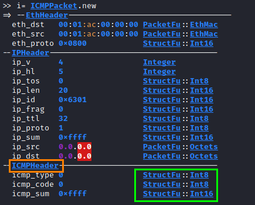
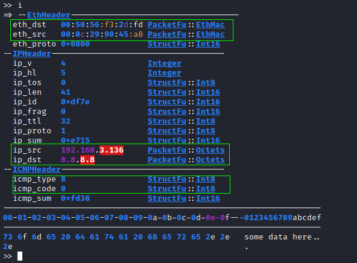
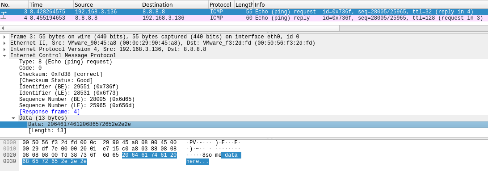
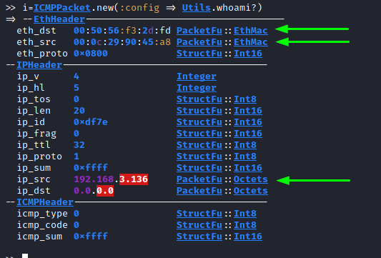

Forge ICMP packet
ICMPPacket class
(
https://github.com/todb/packetfu/blob/master/lib/packetfu/protos/icmp.rb)
require "packetfu"
include PacketFu

i= ICMPPacket.new
Check the documentation to know how to set these values:
• ETHHeader: https://www.rubydoc.info/github/todb/packetfu/PacketFu/EthHeader
• IPHeader: https://www.rubydoc.info/github/todb/packetfu/PacketFu/IPHeader
• ICMPHeader: https://www.rubydoc.info/github/todb/packetfu/PacketFu/ICMPHeader
How send an ICMP packet
To send an UDP packet you need to set the following fields:
◇ eth_saddr → source MAC address
▪ Check Utils.whoami?[:eth_saddr]

◇ eth_daddr → destination MAC address
▪ destination outside our local network → MAC address of the default gateway
- Check Utils.whoami?[:eth_daddr]

▪ destination inside of the local network → MAC address of the destination
- Utils.arp("[IP_Address_destination]")
◇ ip_daddr → destination address
◇ ip_saddr → source address
◇ icmp_type → determines what the ICMP packet is used for
◇ icmp_code →
i= ICMPPacket.new
i.eth_saddr="00:0c:29:90:45:a8" #source MAC address
i.eth_daddr="00:50:56:f3:2d:fd" #destination MAC address
i.ip_saddr="192.168.3.136" #ip source address
i.ip_daddr= "8.8.8.8" #ip destination address
i.icmp_type=8
i.icmp_code=0
i.payload="some data here..." #icmp echo request have also a data field
i.recalc #use first always recalc, in order to calculate the
# checksum of the modified packet
i.to_w #To send the packet


Fast Way: The parameters below can be set automatically (no spoofing)
WARNING if the destination is in the local network: this method will set the destination MAC address(eth_daddr/eth_dst) at the default gateway, but if the target is inside the local network, we need to set directly the MAC address of the target and not of the default gateway.
• eth_saddr → source MAC address
• eth_daddr → destination MAC address
• ip_saddr → ip source address
with this command:
i=ICMPPacket.new(:config => Utils.whoami?)
